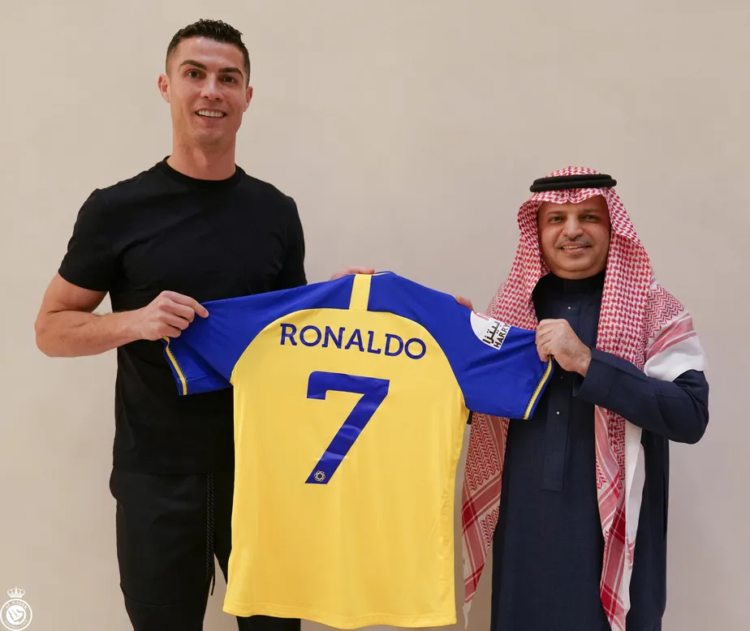
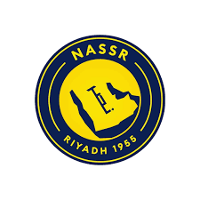
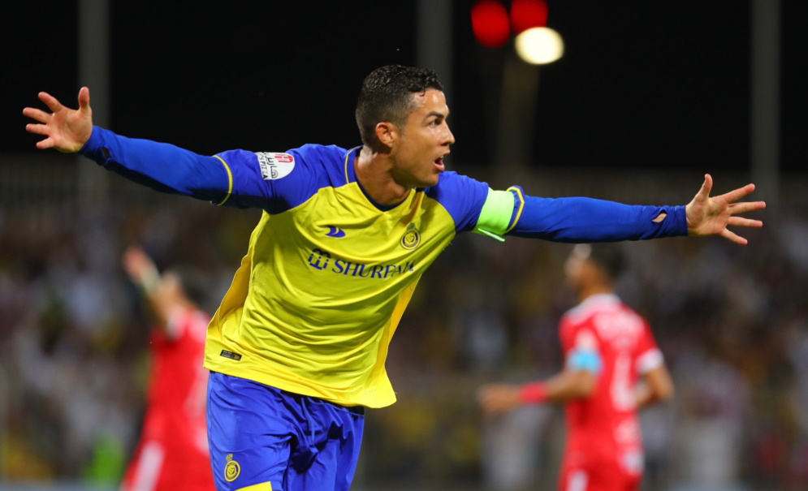
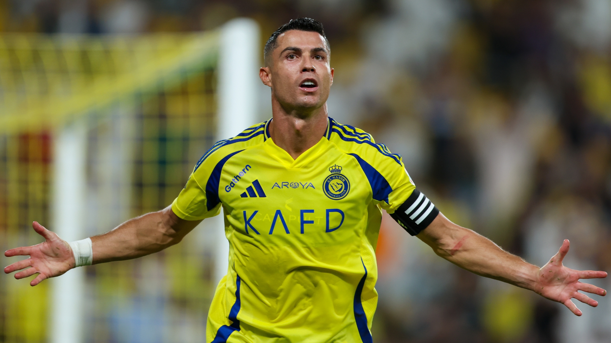

Cristiano Ronaldo avalia futuro na Arábia Saudita
Cristiano Ronaldo, aos 40 anos, está em um momento decisivo de sua carreira. Com contrato com o Al-Nassr até junho de 2025, o craque português avalia suas opções: renovar com o clube saudita ou buscar um novo desafio que lhe permita continuar competindo em alto nível e conquistando.
Situação Atual no Al-Nassr
Desde sua chegada ao Al-Nassr em dezembro de 2022, Cristiano Ronaldo disputou 90 partidas, marcou 81 gols e forneceu 18 assistências. Apesar de seu desempenho individual impressionante, o clube ainda não conquistou títulos expressivos, o que tem sido uma preocupação para o jogador
Proposta de Renovação
O Al-Nassr apresentou uma proposta de renovação de contrato até junho de 2026, com um salário anual superior a 200 milhões de euros. Além disso, o clube ofereceu a Ronaldo uma participação de 5% na propriedade do Al-Nassr, tornando-o coproprietário. O novo contrato também inclui a promessa de reforçar o elenco com contratações de peso, como o volante brasileiro Casemiro, para aumentar as chances de conquistar títulos. portaltela.com3, goal.com4, uol.com.br5
Avaliação de Novos Desafios
Apesar da proposta atraente do Al-Nassr, Cristiano Ronaldo considera a possibilidade de buscar um novo desafio em outro clube que lhe ofereça maiores chances de conquistar títulos. O jogador já pode assinar um pré-contrato com qualquer equipe, e clubes como o Al-Hilal e o Botafogo demonstraram interesse em sua contratação. uol.com.br6
Objetivos Futuros
Cristiano Ronaldo tem como objetivo disputar a Copa do Mundo de 2026 em alto nível. Para isso, ele busca estar em um ambiente competitivo que lhe permita manter seu desempenho e alcançar a marca de 1.000 gols na carreira.
Conclusão
O futuro de Cristiano Ronaldo permanece incerto. Enquanto o Al-Nassr oferece uma proposta financeira e estrutural significativa para sua permanência, o desejo do jogador de conquistar títulos pode levá-lo a considerar outras opções. A decisão final deverá ser anunciada nos próximos meses, e o mundo do futebol aguarda ansiosamente para saber qual será o próximo capítulo da carreira do craque português.